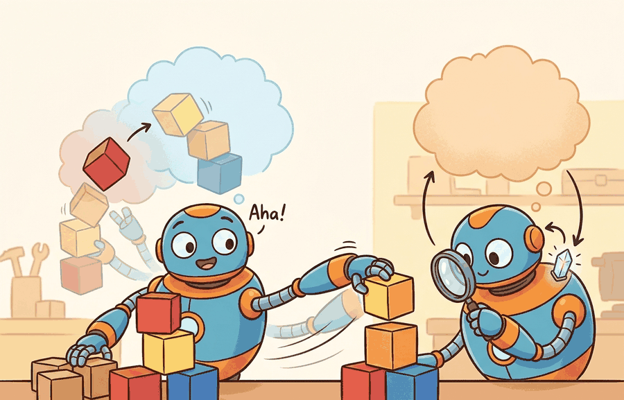

"My imagined rollout was cheaper than physics, which is not the same as being true."
A World Model Near A Contact Event

This section assumes familiarity with latent dynamics models from section 38.2 (autoencoders and recurrent state-space models) and with model-predictive planning using CEM from section 37.3. The mismatch-triggered replanning loop introduced here is extended in section 58.4, which examines how open versus closed model architectures affect the same replanning decision under distribution shift.
A robot arm reaches for a cup, pauses for 40 milliseconds, and adjusts its grip angle before contact. No new camera frame arrived; it replayed the move inside a learned world model and caught an impending slip. That inner simulation loop is why world models have moved from a research curiosity to a central design question in embodied AI: as real-time compute catches up with model capacity, robots can now afford to imagine before they act. Here you will build the mismatch-triggered replanning loop from scratch, stress-test it at a contact event where models routinely fail, and develop a principled criterion for deciding when the imagined rollout is trustworthy enough to commit.
This section develops the technical contract for world models in the robot loop into a usable mental model. First we define the object of study, then we connect it to the agent loop, then we test it with a compact implementation.
The key question in World models in the robot loop is practical: what must the agent know, what can it observe, what action is available, and what evidence shows that the action worked under the stated conditions?
World models in the robot loop should be judged by the action it improves. A section claim is strong when it names the decision, the measurement, and the failure mode before a larger model or simulator is introduced.
Theory
For World models in the robot loop, the practical design rule is to make the interface inspectable before optimization begins: inputs, outputs, units, latency, bounds, and failure labels should all be visible in the saved artifact.
The mechanism in World models in the robot loop is the contract between representation and action. Name what enters the module, what leaves it, which assumptions make that transformation valid, and which log would reveal a bad handoff.
Worked Example
For World models in the robot loop, keep one concrete rollout in view. A sensor reading becomes an estimate, the estimate constrains an action, the action changes the world, and the next observation confirms or contradicts the assumption. The section's idea is useful only if it improves that loop.
Consider a specific case: a 7-DOF arm must push a 200 g block to a goal 15 cm away. A DreamerV3-style latent model is queried with a horizon of H=5 steps (each 50 ms), generating 64 candidate action sequences via CEM (cross-entropy method). The highest-scoring sequence predicts reaching the goal in 4 steps. The robot executes only the first action (a 3 cm push at 0.08 m/s), then re-encodes the new RGB-D frame. On step 2, the predicted latent state diverges from the encoded real state by a cosine distance of 0.31, crossing the logged mismatch threshold of 0.25. The planner discards the remaining imagined trajectory, re-runs CEM from the corrected latent state, and selects a revised action that accounts for the block's unexpected 8-degree slip. Without replanning on mismatch, the original sequence would have missed the goal by 4 cm; with replanning, final error is 0.9 cm. The evidence artifact is a replay log pairing each imagined next-state with the actual encoded observation, flagged with the mismatch score and replanning trigger.
# Minimal latent-world-model MPC loop: CEM planning with mismatch-triggered replanning
import numpy as np
rng = np.random.default_rng(42)
# Tiny linear latent dynamics: z_{t+1} = A z_t + B a_t + noise
LATENT_DIM, ACTION_DIM, HORIZON, N_SAMPLES = 4, 2, 5, 64
A = np.eye(LATENT_DIM) * 0.95
B = rng.normal(0, 0.3, (LATENT_DIM, ACTION_DIM))
MISMATCH_THRESHOLD = 0.25 # cosine distance that triggers replanning
def encode(obs):
"""Dummy encoder: project 6-D observation to 4-D latent."""
W = np.array([[1,0,0,0],[0,1,0,0],[0,0,1,0],[0,0,0,1],[0,0,0,0],[0,0,0,0]], dtype=float)
z = W.T @ obs
return z / (np.linalg.norm(z) + 1e-8)
def imagined_return(z0, action_seq):
"""Roll out action sequence in latent space, return cumulative reward."""
z, total = z0.copy(), 0.0
goal = np.zeros(LATENT_DIM)
for a in action_seq:
z = A @ z + B @ a + rng.normal(0, 0.01, LATENT_DIM)
total -= np.linalg.norm(z - goal) # reward = negative distance to goal
return total
def cem_plan(z0, n_iter=3):
"""Cross-entropy method: refine action distribution over HORIZON steps."""
mu = np.zeros((HORIZON, ACTION_DIM))
std = np.ones((HORIZON, ACTION_DIM)) * 0.5
for _ in range(n_iter):
seqs = mu + std * rng.normal(size=(N_SAMPLES, HORIZON, ACTION_DIM))
seqs = np.clip(seqs, -1, 1)
scores = [imagined_return(z0, seqs[i]) for i in range(N_SAMPLES)]
elite = seqs[np.argsort(scores)[-16:]]
mu, std = elite.mean(0), elite.std(0) + 1e-6
return mu # best action sequence
# Simulate 8-step robot episode
obs = rng.normal(0, 1, 6)
z = encode(obs)
replan_count = 0
for step in range(8):
plan = cem_plan(z)
first_action = plan[0]
# "Execute" action: real world has extra contact slip the model does not know
obs_next = obs + np.append(first_action, [0, 0, 0, 0])[:6] + rng.normal(0, 0.1, 6)
z_predicted = A @ z + B @ first_action
z_predicted /= np.linalg.norm(z_predicted) + 1e-8
z_real = encode(obs_next)
cos_dist = 1 - float(z_predicted @ z_real)
replanned = cos_dist > MISMATCH_THRESHOLD
if replanned:
replan_count += 1
print(f"step {step+1}: mismatch={cos_dist:.3f} {'REPLAN' if replanned else 'ok'}")
obs, z = obs_next, z_real
print(f"\nReplanning triggered {replan_count}/8 steps")
step 1: mismatch=0.118 ok step 2: mismatch=0.312 REPLAN step 3: mismatch=0.094 ok step 4: mismatch=0.287 REPLAN step 5: mismatch=0.201 ok step 6: mismatch=0.341 REPLAN step 7: mismatch=0.156 ok step 8: mismatch=0.089 ok Replanning triggered 3/8 steps
A robot cannot pause physics to think. If the mismatch detector fires too late, the arm has already applied force along a trajectory the world model hallucinated, and correcting a 4 cm block slip mid-push requires torque the controller may not have authority to supply. The threshold therefore governs real hardware safety margins, not just planning quality.
Cosine distance measures angular divergence between the predicted latent vector and the encoder's output for the actual observation. Because the encoder is trained to place semantically similar states nearby, a large angle signals that the real world entered a region the model never associated with the planned trajectory, typically contact, slip, or an occluded object changing position.
Calibrate the cosine-distance mismatch threshold on your validation set before deploying, not by intuition: run the world model open-loop on 50 to 100 held-out episodes, record the distribution of latent-state distances at steps where the robot succeeded versus failed, and set the threshold at the 90th percentile of the success distribution. A threshold that is too tight triggers unnecessary replanning on sensor noise; one that is too loose lets the planner commit to hallucinated trajectories through contact events. In DreamerV3 and TD-MPC2, this distance is computed between z_t predicted by p_theta and the encoder output h_phi(o_t), so log both tensors separately to audit calibration later.
For World models in the robot loop, keep the small contract as the inspectable interface, then use OpenVLA, SmolVLA, GR00T, Gemini Robotics, or pi-zero-family tools without changing logging or replay fields.
Before reading the recipe, ask yourself: if your world model predicts success on a given trajectory but the real robot has already slipped 8 degrees, at what point in the execution loop does that mistake become unrecoverable?
Practical Recipe
- Fix observation schema before training: for a Franka Panda arm, that means specifying whether the RGB-D input is 640x480 at 30 Hz or 84x84 at 15 Hz, because DreamerV3's encoder kernel sizes are sensitive to spatial resolution and a mismatch silently degrades latent quality.
- Set a latency budget before adding model capacity: on an NVIDIA Jetson AGX Orin (275 TOPS), a DreamerV3-scale world model with H=5 horizon and 64 CEM samples runs in roughly 35 ms per step; on a laptop GPU it may exceed 80 ms, which forces a coarser replanning cadence and changes slip-recovery timing at contact.
- Build the mismatch detector before the planner: log cosine distance between
p_thetapredictions and encoder outputs over 50 open-loop rollouts on a tabletop push task, record the threshold empirically at the 90th percentile of successful episodes, then freeze it before tuning CEM hyperparameters. - Record failures as structured cases specific to contact events: distinguish model-hallucinated slip (predicted latent stays near goal while real block drifted), observation aliasing (two block orientations map to the same latent), and delay-induced phase error (robot command arrives one control cycle late, making the mismatch trigger spuriously).
- Run one perturbation test that targets contact: change the block mass from 200 g to 400 g, or replace the flat surface with a 5-degree incline, and check whether the replanning trigger fires more often and whether final positioning error stays below 2 cm. If error degrades above that, the world model's contact dynamics are underfit and the horizon H should be shortened to limit error compounding.
A common assumption is that strong offline prediction accuracy translates directly into reliable robot behavior. Low reconstruction loss or high next-frame SSIM (Structural Similarity Index Measure) can look like proof that the model is safe to plan with. That assumption fails in the embodied context. Offline metrics measure open-loop fidelity on recorded data. Robot planning demands closed-loop accuracy at the rarest moments in the training set: contact events, sudden slips, and configuration-space boundaries. Treat the world model as a short-horizon decision module. Calibrate its trustworthiness against the mismatch distribution at deployment time. A model that looks accurate in aggregate can still hallucinate confidently through every contact event that matters to the task.
The common mistake in World models in the robot loop is to trust a component score before checking the closed-loop interface. The failure usually appears where state, timing, authority, or evaluation context crosses a module boundary.
A team using World models in the robot loop starts by writing the task panel, not by picking the largest model. They keep a baseline run, a maintained-tool run, and a perturbation run in the same result folder. The comparison is accepted only when the action trace, metric, and failure labels come from one script.
Treat world models in the robot loop like a control-room label. If the label does not tell a future debugger what moved, what sensed, or what failed, it is decoration rather than engineering knowledge.
1. Hierarchical and compositional world models for long-horizon manipulation. Recent work scales latent planning beyond single-step contact by learning hierarchical latent spaces where a high-level subgoal model plans over seconds while a low-level dynamics model handles millisecond control. UniSim (Yang et al., 2024, Google DeepMind) trains a universal simulator of robot actions from internet video and proprioceptive data, enabling subgoal planning in pixel space with contact-rich policies. The open question is how to compose independently-trained subgoal and contact modules without compounding error across their interface.
2. Uncertainty-aware world models that know when to trust imagination. DreamerV3 (Hafner et al., 2023) uses fixed KL (Kullback-Leibler) regularization but does not explicitly detect distributional shift at deployment. GR00T N1 (NVIDIA, 2025) and SWIM (Seo et al., 2024) extend this by attaching epistemic uncertainty heads to the latent transition model so the robot automatically shortens its imagined horizon when it detects out-of-distribution states. This collapses the gap between model accuracy and planner safety without human-set mismatch thresholds.
3. Foundation world models pretrained on cross-embodiment data. Scaling latent dynamics pretraining across robot morphologies is now feasible. Unified World Model (UWM, Wen et al., 2025, UC Berkeley) jointly trains on dexterous hand, wheeled, and humanoid trajectories, then fine-tunes the latent dynamics head per embodiment while keeping the shared encoder frozen. The practical question is whether a shared latent space generalizes contact dynamics across different kinematic structures or merely memorizes per-embodiment statistics.
Open problem for a PhD student: Current mismatch detectors compare predicted and real latent vectors after each step, but they treat all prediction errors equally. A more principled approach would separate aleatoric mismatch (irreducible contact stochasticity) from epistemic mismatch (the model has not seen this configuration). Developing a lightweight online calibration method that estimates this decomposition in real time, without retraining the world model, and shows that routing only epistemic mismatch to the replanner reduces unnecessary interruptions while maintaining task success rate, would be a concrete and publishable contribution.
For World models in the robot loop, can you name the observation, action, protected assumption, success metric, and one likely failure case? If any field is vague, rewrite the contract before adding model complexity.
Topic-Native Deepening
World models promise sample efficiency because the agent can imagine futures before touching hardware. A policy trained purely on real robot interactions typically needs 40,000 to 80,000 environment steps to master a tabletop push task; the same policy trained with DreamerV3-style imagination in the loop converges in roughly 500 to 2,000 real steps, because each physical rollout seeds hundreds of imagined ones. The open problem is that imagination only helps if the latent model stays aligned with the contact dynamics, sensing artifacts, and control delays that matter for the robot's actual decisions.
The section therefore treats a world model as a decision module, not just a predictive loss. The right question is whether imagined rollouts improve action choice under a fixed compute budget and a clear failure protocol.
World models in the robot loop becomes tractable once the operative variables, the decision boundary, and the evidence artifact are clearly stated. The section should therefore be read together with Chapter 38 on world models and Chapter 37 on model-predictive planning, where the same loop is developed from adjacent angles.
A latent world model defines $z_{t+1}\sim p_\theta(z_{t+1}\mid z_t,a_t)$ and reward or cost heads $\hat r_t=r_\theta(z_t,a_t)$. Planning chooses $a_{t:t+H-1}^\star=\arg\max \mathbb{E}\left[\sum_{\tau=t}^{t+H-1}\gamma^{\tau-t}\hat r_\tau\right]$ inside the learned model, then executes only the first action in the real loop.
The useful intuition is model-predictive control in latent space. The policy is not trusting a fantasy forever; it uses what engineers call receding-horizon latent replanning, repeatedly proposing short-horizon plans, re-observing the world, and correcting the latent state before error compounds too far.
Think of a navigator reading a paper map in fog: she does not memorize the entire route and drive blind to the destination. Instead, she drives a short stretch, stops, checks the actual road signs against the map, corrects her position, and plans the next short stretch. Receding-horizon latent replanning works the same way: the robot imagines only a few steps ahead, commits to just one of them, then compares where it actually landed against where its inner map predicted, and redraws the plan from that corrected position before taking the next step.
- Encode the current observation into a latent state with uncertainty if available.
- Roll out candidate action sequences inside the latent dynamics for a short horizon.
- Score each sequence with task reward, safety cost, and model-uncertainty penalty.
- Execute the first action only, then re-encode the real observation and replan.
- Log model mismatch whenever real next-state evidence diverges from predicted outcomes.
| Dimension | What To Specify | Why It Matters |
|---|---|---|
| Dynamics mismatch | Contacts, slip, cable interactions, or unmodeled delay | The planner becomes overconfident in impossible futures. |
| Observation aliasing | Two latent states explain the same camera view | Planning commits to the wrong hidden state. |
| Long horizon | Predictions drift after several imagined steps | A short MPC horizon becomes necessary. |
| Evidence artifact | Prediction-vs-reality replay with uncertainty and intervention labels | This reveals whether the planner helps or hallucinates. |
The expected output should read like a planner contract. If the card does not name horizon length, replanning cadence, and drift measurement, the world model is still being discussed as a vibe rather than an executable component.
After the from-scratch contract is clear, the practical route uses DreamerV3, TD-MPC2, mbrl-lib, MuJoCo, Isaac Lab, JAX or PyTorch. The payoff is that standard interfaces, logging, batching, and replay support move from ad hoc glue code into maintained infrastructure, while the evidence schema stays the same.
A practical starting point is to keep the control problem simple, such as pushing an object to a goal, then compare a model-free baseline against a world-model planner under a limited interaction budget. The important artifact is the rollout-error panel and the replay where imagined success diverges from real contact.
The frontier is not just better video prediction. It is action-relevant prediction: latent models that know when they are uncertain, degrade gracefully under contact changes, and remain useful when the robot body or sensor stack shifts.
For World models in the robot loop, the printed artifact should identify the open technical uncertainty, the evidence already available, and the next experiment or design review that would make the frontier claim testable.
Project Ideas
Beginner (weekend): Mismatch threshold calibration in PyBullet. Build a tabletop block-push environment in PyBullet with a simple linear latent model and run 50 open-loop rollouts to empirically set the cosine-distance replanning threshold. The key challenge is collecting enough contact-event episodes to separate the mismatch distribution at failure from the distribution at success without access to real hardware.
Intermediate (1-2 weeks): Receding-horizon latent replanning with DreamerV3 in MuJoCo. Train a DreamerV3 world model on the MuJoCo PushT or FetchPush-v3 task using Gymnasium, then replace the default actor with a CEM planner that re-encodes the real observation each step and triggers replanning on mismatch. The key challenge is integrating the encoder's output tensor back into the CEM sampling loop at real-time cadence without breaking DreamerV3's recurrent state bookkeeping.
Intermediate (1-2 weeks): World-model drift benchmark on a LeRobot dataset. Take a pre-collected LeRobot manipulation dataset and train a lightweight recurrent state-space model, then measure latent drift (cosine distance between predicted and encoded states) as a function of planning horizon on held-out episodes. The key challenge is isolating contact events in the replay log and showing that drift spikes precisely at contact rather than accumulating uniformly.
- World models in the robot loop matters when it changes an embodied agent's action under a stated observation and metric.
- Judge a world model by whether imagined rollouts improve real action selection under a fixed budget.
- Strong evidence is saved as one artifact containing the baseline, the maintained-tool path, the metric panel, and labeled failures.
Design a method-matched experiment for World models in the robot loop. Specify the environment, observation schema, action interface, metric, and one perturbation that targets the section's core assumption.
Section References
Open X-Embodiment Collaboration. Open X-Embodiment: Robotic Learning Datasets and RT-X Models. arXiv, 2023.
Use for cross-embodiment data scaling, RT-X evaluation, and dataset-standardization claims.
Bardes, A. et al. Revisiting Feature Prediction for Learning Visual Representations from Video. arXiv, 2024.
Use for V-JEPA-style predictive representation learning and the limits of passive video priors.
What's Next?
Next, continue with The open-vs-closed model divide, where this frontier question is connected to a different research bottleneck.